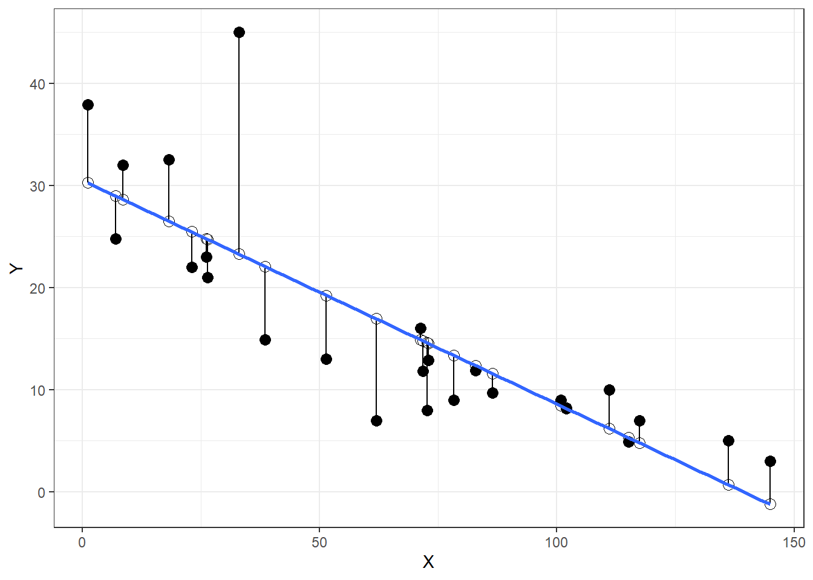
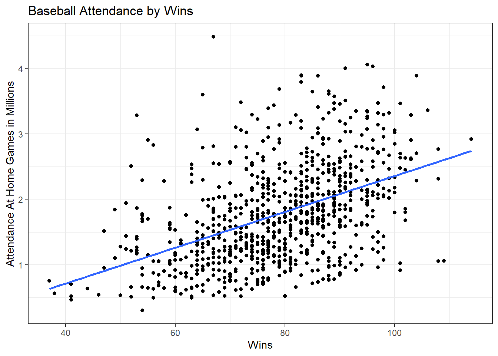
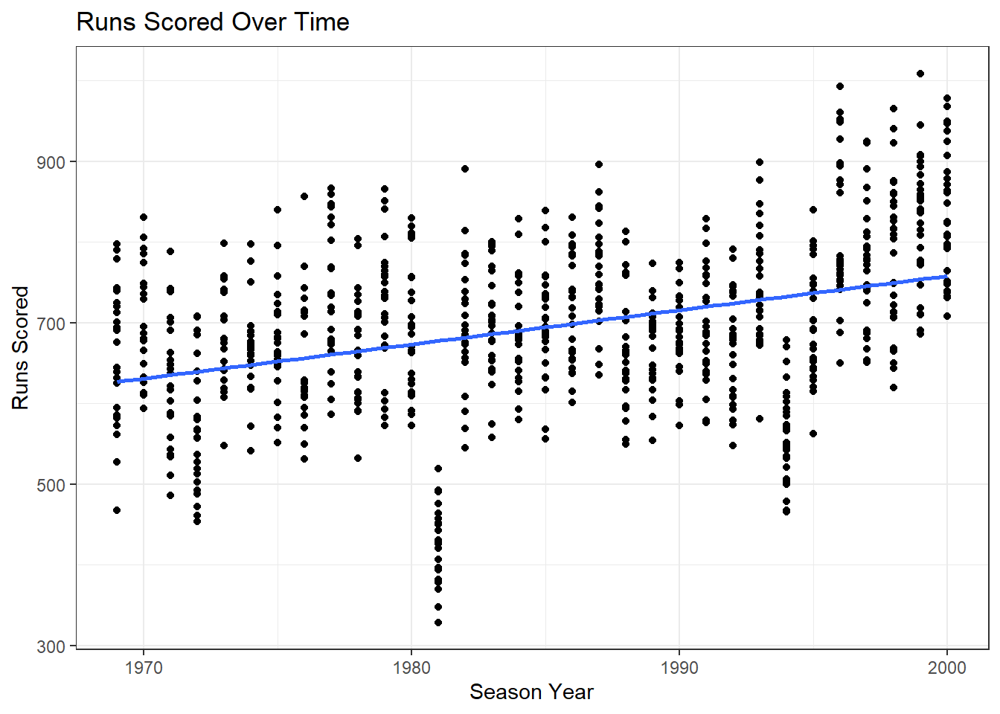
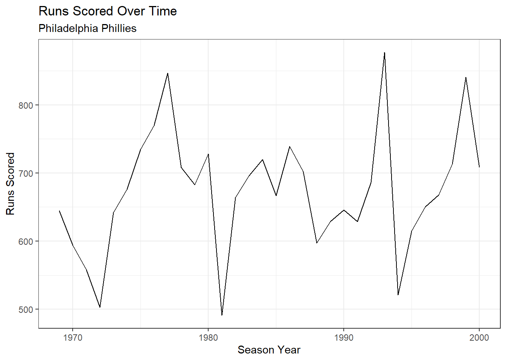
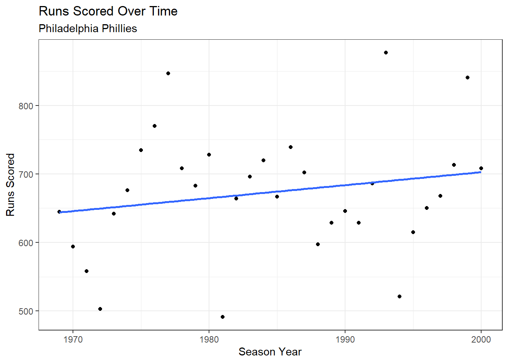

7 Lab VI: Goodness of Fit & Multiple Regression

## Packages
library(tidyverse)
library(tidymodels)
library(mosaic)
## Data
load("~/GOVT5001/Lab VI/sh.RData")
house <- SaratogaHouses
## Model
model1 <- lm(price~bedrooms, data=house)7.1 \(R^2\)
\[1-\frac{SSR}{TSS} = \frac{\sum\epsilon^2}{\sum(y_{i}-\bar{y})^2}=\frac{MSS}{TSS}=\frac{\sum(\hat{y_{i}}-\bar{y})^2}{\sum(y_{i}-\bar{y})^2}\]
- Coefficient of Determination
- Proportion of the Variance in \(Y_{i}\) explained by \(X_{i}\)
- “Goodness of Fit”
##1-SSR/TSS
1-sum((model1$residuals)^2)/
sum((house$price-mean(house$price))^2)## [1] 0.1602791## MSS/TSS
sum((model1$fitted.values-mean(house$price))^2)/
sum((house$price-mean(house$price))^2)## [1] 0.1602791summary(model1)$r.squared## [1] 0.1602791\[R^2=Cor(Y_i,\hat{Y_i})\]
- Squared Correlation Between Observed Y and Fitted Y
mod_aug <- augment(model1)
(cor(mod_aug$.fitted, mod_aug$price)^2)## [1] 0.1602791- \(R^2\) as proportional reduction in error
## Constant Only model
null_model <- lm(house$price~1)
## The intercept is just the mean of Y
summary(null_model)$coefficient## Estimate Std. Error t value Pr(>|t|)
## (Intercept) 211966.7 2368.132 89.50798 0mean(house$price)## [1] 211966.7## R Squared is 0
summary(null_model)$r.squared## [1] 0## Squared of Model 1
summary(model1)$r.squared## [1] 0.1602791- The number of bedrooms that a house has explains 16% of the variation in the price of a house
7.2 Mean Squared Error & Root Mean Squared Error
\[\hat{MSE} = \frac{1}{n}\sum^{n}_{i=1}(Y_{i}-\hat{Y_{i}})^2\]
Average distance from the line-of-best-fit
The root mean square error, or RMSE, is calculated by taking the square root of the MSE. Here is the formula: \[\hat{RMSE} = \sqrt{\frac{1}{n}\sum^{n}_{i=1}(Y_{i}-\hat{Y_{i}})^2}\]
The average prediction error in units of Y
fit <- lm(Mustangs$Price ~ Mustangs$Miles)
Mustangs$predicted <- predict(fit)
Mustangs$residuals <- residuals(fit)
Mustangs %>%
ggplot(aes(Miles, Price)) +
geom_point(col = "black", size = 3) +
geom_point(aes(y = predicted), shape = 1, size = 3) +
geom_segment(aes(xend = Miles, yend = predicted)) +
theme_bw() +
geom_smooth(method = "lm", se = F) +
labs(x = "X", y = "Y")
- Take the square root of the mean of the distance of the solid black lines for RMSE
## MAE of Model 1
summary(model1)$sigma## [1] 90234.16## Manually
sqrt(mean((mod_aug$.fitted - mod_aug$price)^2))## [1] 90181.937.3 Multiple Regression
\[Price_{i}=\beta_{0} + \beta_{1}Bedrooms_{i} + \beta_{2}Bathrooms_{i} + \epsilon_{i}\]
lm(price~bedrooms + bathrooms, data=house)##
## Call:
## lm(formula = price ~ bedrooms + bathrooms, data = house)
##
## Coefficients:
## (Intercept) bedrooms bathrooms
## 2193 19325 783167.4 Adjusted \(R^2\)
\[Adjusted\space R^2 = 1- \frac{(1-R^2)(N-1)}{(N-k-1)}\]
- \(R^2\) is just \(R^2\)
- \(N\) is the sample size
- \(k\) is the number of independent variables
- Penalizes us for just throwing more variables at the model
- Proportion of variation in \(Y_{i}\) explained by the model
model2 <- lm(price~bedrooms + bathrooms, data=house)
1-(1-summary(model2)$r.squared)*(length(house$price)-1)/
((length(house$price)-2-1))## [1] 0.3763283summary(model2)$adj.r.squared## [1] 0.37632837.5 Lab Questions: Congratulations! You’ve been hired as an analyst by the [insert your favorite baseball team name here]. Your first job is to make a few predictions about what your teams’ future will look like.
- Download lab_vi.Rmd from Canvas
- Download bbData.RData from Canvas
- Try the lab questions!
7.5.2 Run a regression model with attendance as the DV and wins as the IV. Save as model1.
## Simple Regression Model
model1 <- lm(home_attend ~ wins, data = bbData)
model1##
## Call:
## lm(formula = home_attend ~ wins, data = bbData)
##
## Coefficients:
## (Intercept) wins
## -378164 273457.5.3 Does winning increase attendance? If so, by how much?
## Pulling out coefficient
model1$coefficients[2]## wins
## 27345.187.5.4 Create a scatterplot to illustrate your results from A and B.
## Hint: Run the line of code below to remove scientific notation.
options(scipen = 999999)
## Creating Plot
ggplot(bbData, aes(x = wins, y = home_attend/1000000)) +
geom_point() +
geom_smooth(method = "lm", se = F) +
theme_bw() +
labs(title = "Baseball Attendance by Wins", x = "Wins",
y = "Attendance At Home Games in Millions")
7.5.5 Does a higher number of wins increase attendance when you include runs_scored and runs_allowed into your model? What is wins’ new effect. Save the results as model2.
## Multiple Regression Model
model2 <- lm(home_attend~wins + runs_scored + runs_allowed, data=bbData)
model2##
## Call:
## lm(formula = home_attend ~ wins + runs_scored + runs_allowed,
## data = bbData)
##
## Coefficients:
## (Intercept) wins runs_scored runs_allowed
## -270324 3261 4260 -1683Wins increase attendance by 3,261 while holding all other factors equal.
7.5.6 Assess fit. What is the change in R^2 from model1 to model2?
## Examining R Squared
summary(model2)$adj.r.squared## [1] 0.2933172summary(model2)$adj.r.squared - summary(model1)$r.squared## [1] 0.08311133Model 2 explains 29% of the variation in home_attendance. The change is about * percentage points.
7.5.7 Which model do you think is best?
For our purposes, model 2 has the highest r squared, so model 2 is the best.
7.5.8 Use your preferred model to predict attendance based on 100 wins, 500 runs scored, and 360 runs allowed.
## Making Predictions
-270324 + (3261*100) + (4260*500) + (-1683*360)## [1] 1579896## With Code
model2$coefficients[1] + (model2$coefficients[2]*100) + (model2$coefficients[3]*500) +
(model2$coefficients[4]*360)## (Intercept)
## 15800667.5.9 Based on your models, how can teams increase their attendance?
Answer: Teams should win more games, score more runs, and allow less runs scored against them. Easy!
7.5.10 Your colleague argues that runs have been increasing over time. Create a scatterplot, with a line of best fit, to evaluate their claim.
## Plot
ggplot(bbData, aes(x = season, y = runs_scored)) +
geom_point() +
geom_smooth(method = "lm", se = F) +
theme_bw() +
labs(title = "Runs Scored Over Time", x = "Season Year",
y = "Runs Scored")
7.5.11 The analysis above is for the full MLB. Rerun your models and scatterplots for one team.
## Subset the data
phiData <- subset(bbData, team == "PHI")
## Models
model1b <- lm(home_attend~wins, data = phiData)
model1b##
## Call:
## lm(formula = home_attend ~ wins, data = phiData)
##
## Coefficients:
## (Intercept) wins
## -293337 29191model1##
## Call:
## lm(formula = home_attend ~ wins, data = bbData)
##
## Coefficients:
## (Intercept) wins
## -378164 27345model2b <- lm(home_attend~wins + runs_scored + runs_allowed, data = phiData)
model2b##
## Call:
## lm(formula = home_attend ~ wins + runs_scored + runs_allowed,
## data = phiData)
##
## Coefficients:
## (Intercept) wins runs_scored runs_allowed
## 1060314 12020 2783 -2745model2##
## Call:
## lm(formula = home_attend ~ wins + runs_scored + runs_allowed,
## data = bbData)
##
## Coefficients:
## (Intercept) wins runs_scored runs_allowed
## -270324 3261 4260 -1683## Wins and Attendance
ggplot(bbData, aes(x = wins, y = home_attend/1000000)) +
geom_point() +
geom_smooth(method = "lm", se = F) +
theme_bw() +
labs(title = "Baseball Attendance by Wins", x = "Wins",
y = "Attendance At Home Games in Millions", subtitle = "Philadelphia Phillies")## Runs Scored by Season
ggplot(phiData, aes(x = season, y = runs_scored)) +
geom_line() +
theme_bw() +
labs(title = "Runs Scored Over Time", x = "Season Year",
y = "Runs Scored", subtitle = "Philadelphia Phillies")
## Line Plot
ggplot(phiData, aes(x = season, y = runs_scored)) +
geom_point() +
geom_smooth(method = "lm", se = F) +
theme_bw() +
labs(title = "Runs Scored Over Time", x = "Season Year",
y = "Runs Scored", subtitle = "Philadelphia Phillies")